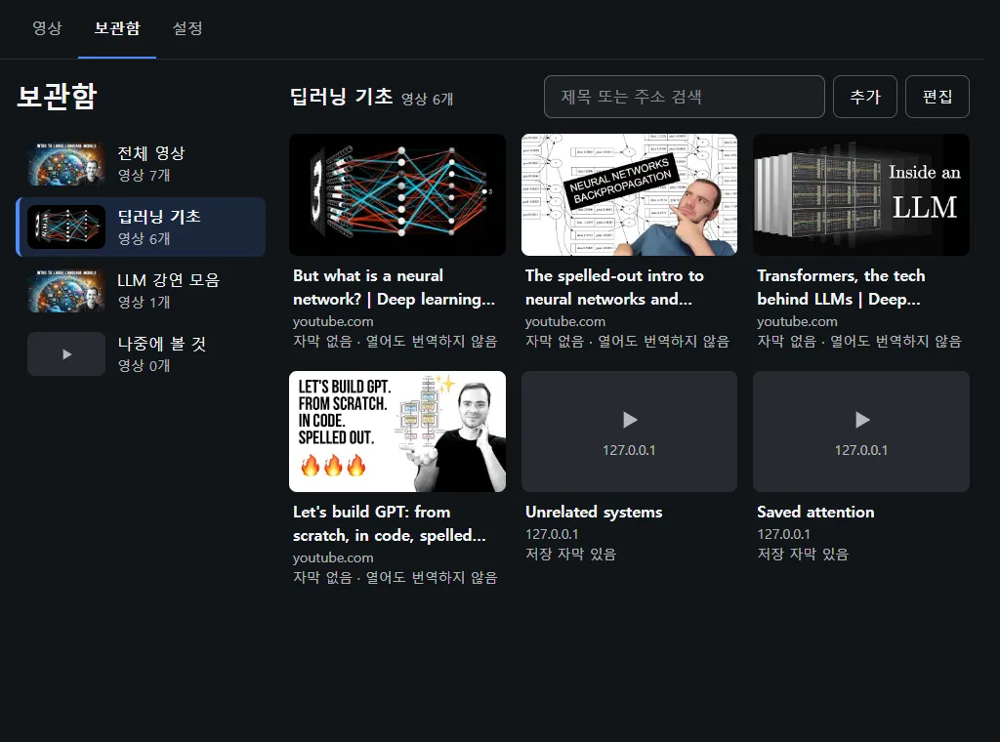
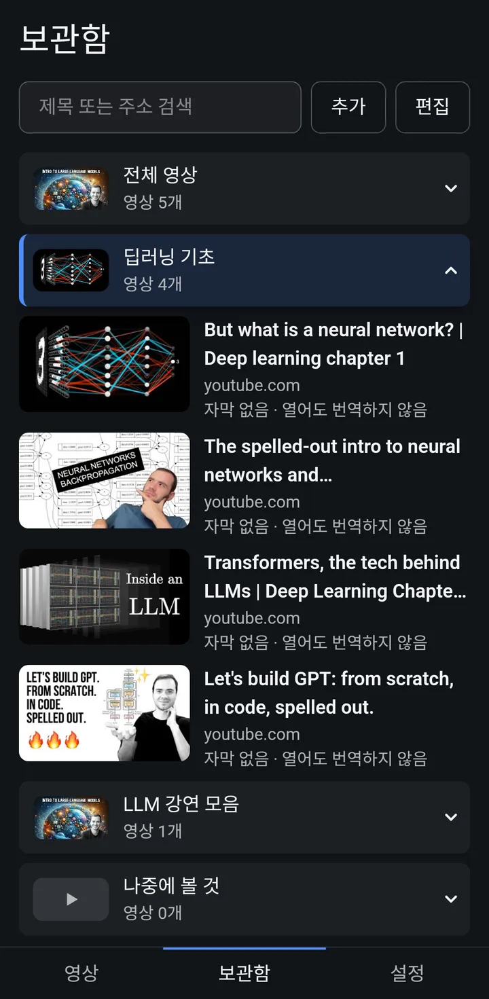
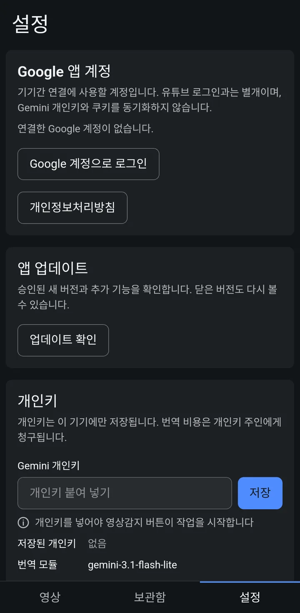

외국어 강연에
한국어 자막을
앱에서 영상을 열고 영상감지를 누르세요. 끝나면 알림이 오고, 재생 위치에 맞춰 한국어 자막이 뜹니다.
소리는 휴대폰이나 PC 안에서 받아쓰고, 번역 모델에는 글만 보냅니다. 그래서 한 시간짜리 강연도 번역비가 1,000원을 넘지 않습니다.
처음이라면 설치 방법부터 보세요. 본인 Gemini API 키가 하나 필요합니다.

누르는 건 영상감지 하나
- 소리 받기영상의 오디오만 내려받습니다. 한 시간 강연이 6초 안팎입니다.
- 받아쓰기whisper.cpp가 기기 안에서 글로 옮깁니다. 소리는 밖으로 나가지 않습니다.
- 번역강연의 용어표를 먼저 만든 뒤, 자막 한 줄씩 Gemini로 번역합니다.
- 알림앱을 내려 둬도 계속 돕니다. 다 되면 알림을 눌러 바로 봅니다.
숫자로 보면
- 1,000원영상 1시간당 번역비 상한앱이 사용량으로 비용을 계산해, 이 선에서 번역 요청을 멈춥니다. 코드에 넣은 단가와 환율 기준이라 실제 청구액과 다를 수 있습니다.
- 6초1시간 강연의 오디오 받기예전엔 30분 걸렸습니다. 유튜브는 파일을 통째로 달라고 하면 재생 속도의 두 배로만 보내 줘서, 10MiB씩 나눠 받습니다.
- 41분휴대폰에서 1시간 강연 자막 준비영상감지부터 자막이 뜰 때까지. 예전엔 약 80분이었습니다. 받아쓰기 모델은 그대로 두고 정확도도 지켰습니다.
측정: 갤럭시 S21+, 집 Wi-Fi, 59분 48초짜리 영어 기술 강연 하나. 기기와 강연에 따라 달라집니다. 측정 기록 보기
한 번 번역하면 다시 볼 때는 공짜
번역한 강연은 보관함에 남습니다. 제목이나 주소로 찾고, 카드를 누르면 저장된 자막과 함께 바로 열립니다. 받아쓰기도 번역도 다시 하지 않으니 비용이 들지 않습니다.
강연은 주제별 재생목록으로 묶을 수 있습니다. 휴대폰에서는 재생목록을 누르면 그 아래로 영상이 펼쳐지고, 넓은 창에서는 왼쪽 목록과 오른쪽 썸네일로 나뉩니다.

PC에서 번역한 강연을 휴대폰에서
두 기기에서 같은 Google 계정으로 로그인하고 PC 앱을 켜 두면, 같은 네트워크 안에서 보관함과 재생목록, 보던 위치가 맞춰집니다.
중간에 서버는 없습니다. Google 계정은 두 기기가 같은 사람 것인지 확인하는 데만 쓰고, 기록은 기기끼리 암호화된 연결로 직접 주고받습니다. Gemini 개인키와 유튜브 로그인은 옮기지 않습니다.
휴대폰이 모바일 데이터에 있으면 집 PC에 닿지 않아 맞춰지지 않습니다. 두 기기 모두 0.1.8 이상이어야 합니다.

아직 안 되는 것
- 라이브 방송, DRM 영상, DASH 영상지원하지 않습니다. 유튜브와 내려받을 수 있는 일반 영상, 지원 형식의 HLS만 됩니다.
- 다른 앱 위의 자막자막은 이 앱 안에서 연 영상 위에만 뜹니다. 유튜브 앱이나 Chrome 위에는 띄우지 않습니다.
- 실시간 자막자막은 강연 전체를 처리한 뒤에 뜹니다. 보면서 바로 번역되지는 않습니다.
- 휴대폰 받아쓰기 정확도휴대폰은 속도 때문에 60MB짜리 작은 모델을 씁니다. 억양이 강하거나 잡음이 많으면 PC보다 틀리기 쉽습니다.
만든 순서
- 영상감지 한 번으로 받아쓰기, 번역, 알림까지 이어지는 첫 버전
- PC 없이 휴대폰만으로 실행. 모델을 574MB에서 60MB로 줄이고, 자막이 앞뒤로 밀리던 번역을 한 줄씩 번역하도록 고침
- 보관함과 주제별 재생목록
- 0.1.7: 승인된 새 버전이 나오면 앱 안에서 알림
- 같은 Google 계정의 PC와 휴대폰이 서버 없이 보관함 공유
- 오디오를 조각으로 받아 30분 걸리던 다운로드가 6초로
- 0.1.8: 휴대폰 자막 준비 80분에서 41분으로, 보관함 개편
설치는 파일 하나
Android는 APK를, Windows는 설치 파일을 받아 실행하면 됩니다. 이미 0.1.7을 쓰고 있다면 앱이 새 버전을 알려 줍니다.